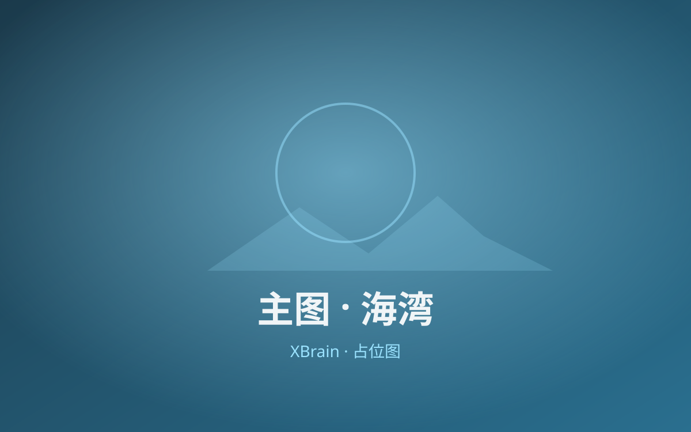
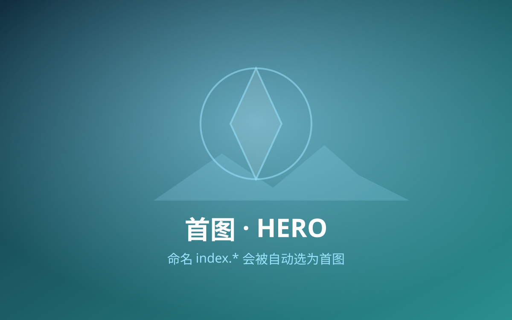
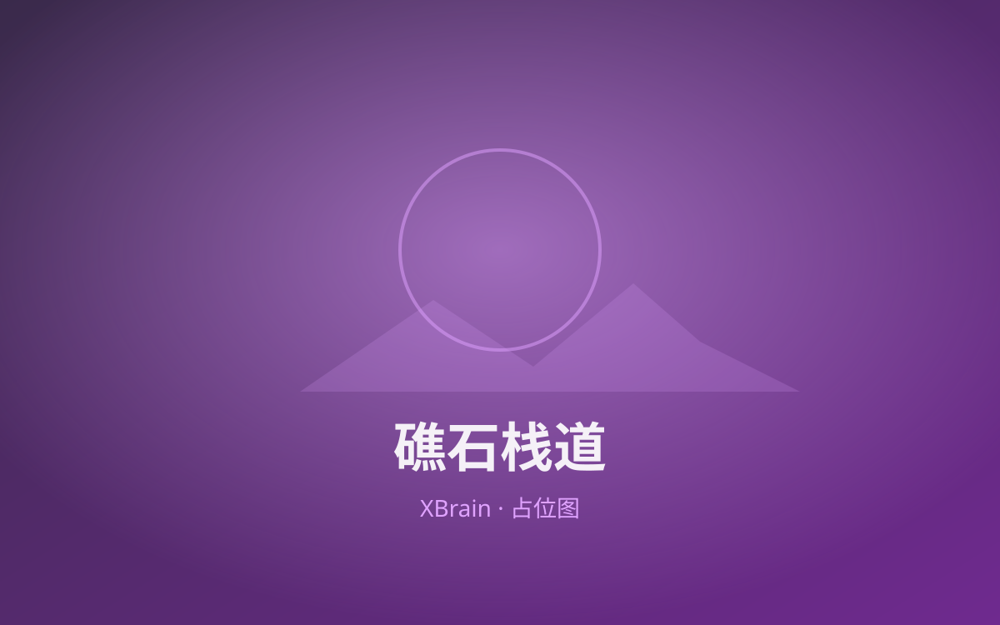
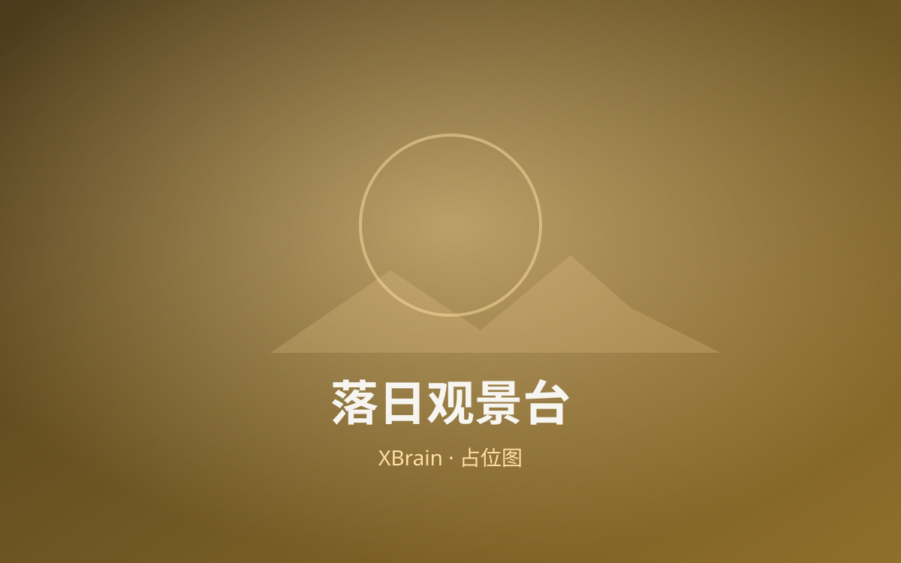
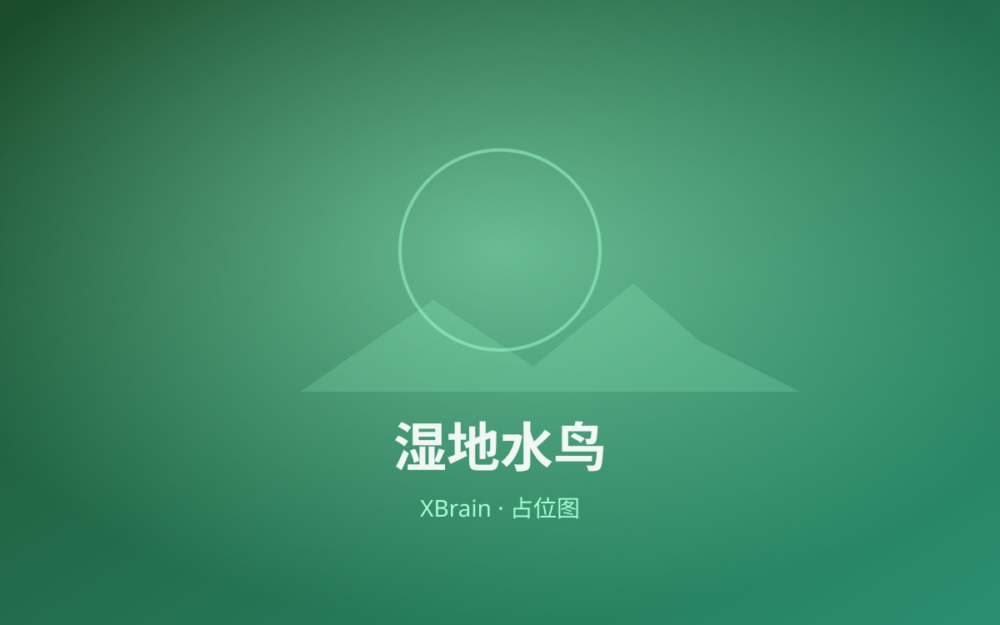
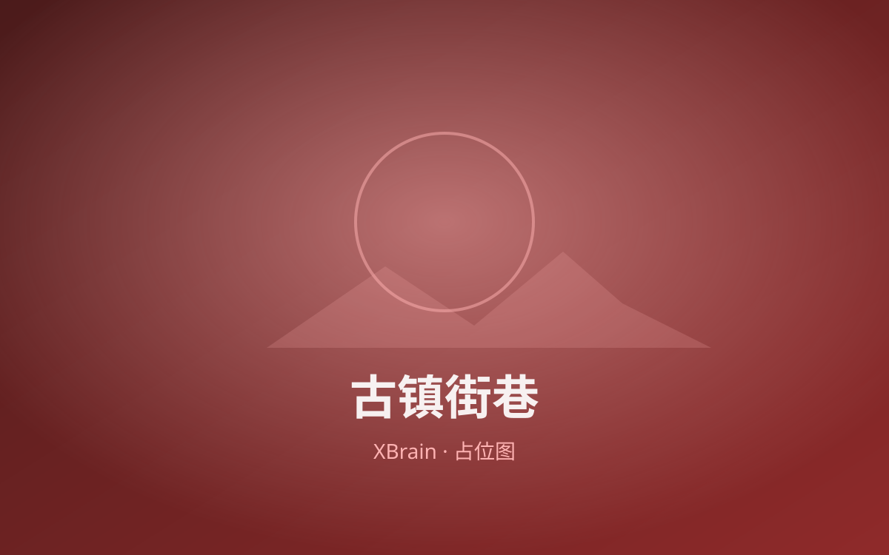

下面两段即为可被 site-template.html 与 site-template-travelogue.html 复用的公共游记模块（COPY BLOCK 2/3 内容）。
制定方案并执行后，在此按时间/站点记录真实行程；每章一段叙述 + 可选组图，主图命名 index.*。
{{这段发生了什么、看到了什么、孩子/家人的反应、随手拍。口语化、真实即可，无需规划腔。}}
{{想补充的细节：停车是否好停、哪条路阴凉、哪个角落出片。}}




{{这一段记录：带了什么吃的、在哪坐下、孩子玩了什么、累了在哪歇。}}


吃了什么、哪家店、随手的小发现（小店/展览/路人有趣的事）。
{{吃了什么、味道、值得再来吗。}}
{{环境、是否适合带娃、出片与否。}}